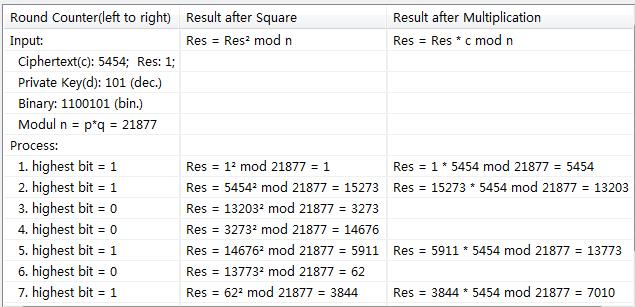
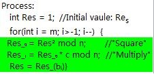
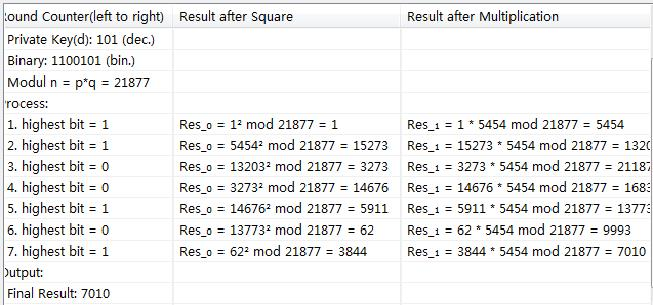
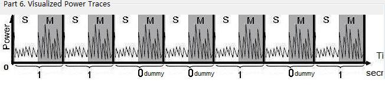

Simple Power Analysis (SPA) umfasst die visuelle Interpretation von Stromkurven (Power Traces) oder Diagrammen, die die elektrische Aktivität kryptografischer Geräte (Smartcards, integrierten Schaltkreisen, ...) im Laufe der Zeit abbilden.
Chiffretext c: Zeigt den, mit dem geheimen privaten Schlüssel d (z. B. 101) verschlüsselten Geheimtext (z. B. 5454).
P und Q sind zwei teilerfremde Zahlen. Das Modul n ist P * Q.
R = cd mod n ist der entschlüsselte Klartext. Der "Square and Multiply"-Algorithmus wird in der Regel verwendet, um die Potenz von cd mod n zu berechnen. Es ist ein effizienter Algorithmus zur schnellen Berechnung von großen Potenzen natürlicher Zahlen. Jedoch ist er anfällig für Power Analysis.
Der "Square and Multiply"-Algorithmus wird verwendet, um die Potenzierung des privaten und des öffentliche Schlüssels während der Ver- und Entschlüsselung des RSA-Algorithmus auszuführen.
Wie oben gezeigt, wird der private Schlüssel zunächst von der dezimalen Darstellung in binäre Darstellung umgewandelt (z.B. 101 (dezimal) zu 1100101 (binär)). Danach quadrieren wir die Bits von links nach rechts und verrechnen sie mit dem vorherigen Ergebnis: Ist das gegenwärtige Bit ein "1", wird eine Multiplikation (Res = Res * c mod n) nach der Quadrierung (Res = Res 2 mod n) durchgeführt. Ist das gegenwärtige Bit eine "0", führen wir nur die Quadrierung aus.
Der "Square and Multiply"-Algorithmus ist anfällig für "Power Analysis Attack", da die Operationen "Square and Multiply" und "Multiply" unterschiedliche Spuren in Stromkurven verursachen.

Die Stromkurve (Power Trace) ist zwischen den Operationen "Square and Multiply" und "Square" unterschiedlich. Dadurch kann die "Simple Power Analysis" jedes Bit des geheimen Exponenten d durch den Vergleich und die Analyse der Stromkurve feststellen. In der Abbildung oben wird die Stromkurve des privaten Schlüssel 1100101 gezeigt.
Der original "Square and Multiply"-Algorithmus kann durch hinzufügen einer Dummy-Multiplikation, wenn das gegenwärtige Bit gleich "0" ist, verbessert werden.
 Egal, ob das gegenwärtige Bit gleich "1" oder "0" ist, es wird immer quadriert und multipliziert.
Offensichtlich gibt es keine Unterschiede mehr, ob eine "0" oder eine "1" verarbeitet wurde. Es kann nicht mehr herausgefunden werden, ob der private Schlüssel d eine "0" oder "1" an einer Stelle enthält.<\p>
Für weitere Informationen über elliptischen Kurve Berechnung, siehe Unterabschnitt "Simple Power Analysis" in "Power-Analyse" oder http://en.wikipedia.org/wiki/Power_analysis#Simple_Power_Analysis.
<\p>